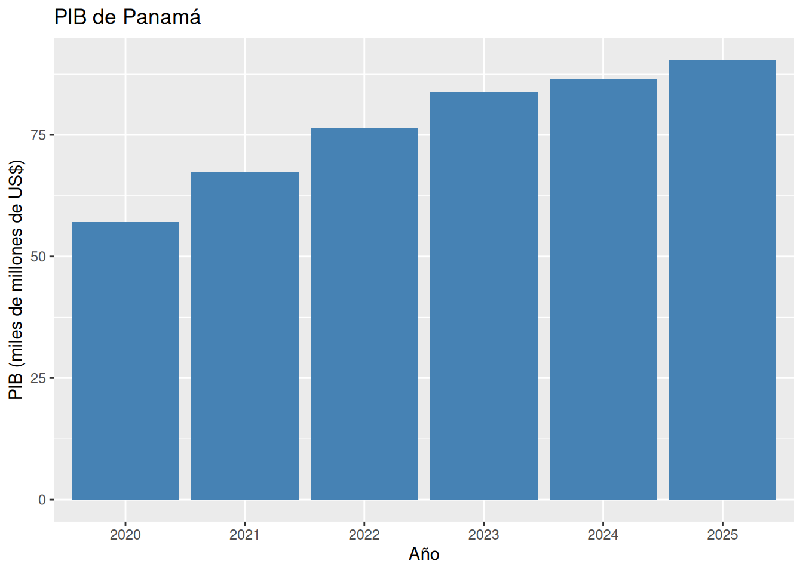
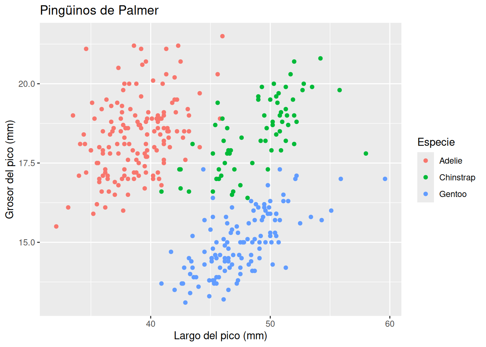
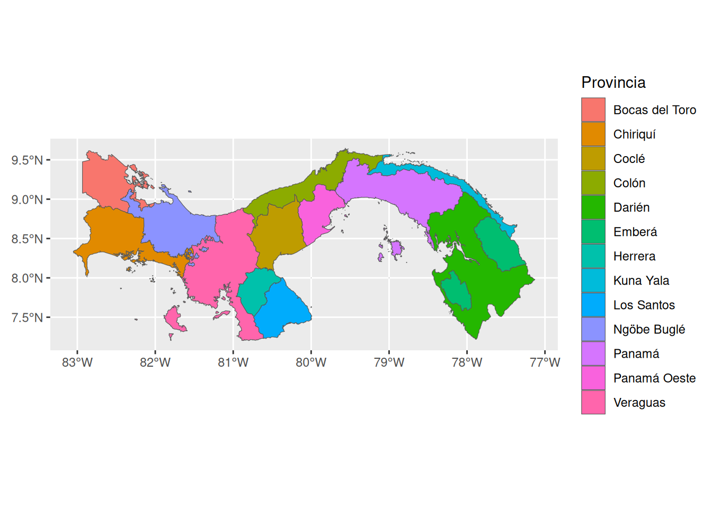

Un Lindo Reporte Ficticio
Introducción
El crecimiento económico de los países centroamericanos ha estado marcado en los últimos años por una combinación de choques externos y procesos de recuperación pospandemia, lo cual hace relevante contar con ejercicios periódicos de seguimiento estadístico. Panamá en particular ha mostrado un desempeño singular dentro de la región debido a su condición de economía de servicios y centro logístico, por lo que este reporte ficticio ilustra, a manera de ejemplo, cómo se documentaría un análisis reproducible que combina fuentes de datos internacionales, ejercicios de clasificación biológica y datos geoespaciales dentro de un mismo documento de Quarto.
Metodología
Para efectos de este ejercicio se combinaron tres fuentes de datos de naturaleza distinta con el único propósito de demostrar capacidades de reproducibilidad y no de sustentar un análisis económico real. En primer lugar, se descargaron series del Producto Interno Bruto de Panamá directamente desde la API del Banco Mundial (World Development Indicators) mediante el paquete de R WDI (Arel-Bundock, 2026). En segundo lugar, se utilizó la base de datos de pingüinos incluida en el paquete palmerpenguins (Horst et al., 2020) como un ejemplo didáctico de análisis exploratorio multivariado. Finalmente, se incorporó información geoespacial administrativa de Panamá a nivel de primera división para ilustrar la generación de mapas dentro del mismo flujo de trabajo reproducible.
Resultados
Desempeño económico
El primer resultado que se presenta corresponde a la evolución reciente del Producto Interno Bruto de Panamá proveniente de la base de datos de indicadores globales del Banco Mundial (Arel-Bundock, 2026). Como se observa en la Figura 1, el PIB muestra la caída abrupta característica del año 2020 asociada a la pandemia, seguida de una recuperación sostenida en los años posteriores.
Una mirada a la naturaleza
Como segundo ejercicio ilustrativo, se exploró la relación entre el largo y el grosor del pico en la base de datos de pingüinos (Horst et al., 2020), diferenciando por especie. La Figura 2 muestra una agrupación relativamente clara de las tres especies en este espacio bivariado, lo cual es consistente con el uso frecuente de este conjunto de datos como ejemplo pedagógico de clasificación.

La perspectiva geográfica
Por último, la Figura 3 presenta la división administrativa de primer nivel de Panamá, generada a partir de datos geoespaciales, la cual serviría como base cartográfica para futuros análisis territoriales.

Conclusiones
Este reporte ficticio ilustra, con fines exclusivamente demostrativos, cómo integrar fuentes de datos heterogéneas (indicadores macroeconómicos obtenidos mediante WDI (Arel-Bundock, 2026), datos biológicos de ejemplo del paquete palmerpenguins (Horst et al., 2020) y capas geoespaciales) en un único documento reproducible con referencias cruzadas a figuras y citas bibliográficas.
Para futuros ejercicios de este tipo se recomienda ampliar el rango temporal de las series económicas y contrastar el desempeño de Panamá con el de otros países de la región centroamericana. También sería conveniente incorporar variables geoespaciales adicionales, como indicadores socioeconómicos a nivel provincial, para enriquecer el análisis territorial. Finalmente, se recomienda documentar de manera explícita las limitaciones de cada fuente de datos utilizada, de forma que quede clara la naturaleza ilustrativa de este tipo de reportes.
Referencias
Arel-Bundock, V. (2026). WDI: World Development Indicators and Other World Bank Data. https://doi.org/10.32614/CRAN.package.WDI
Horst, A. M., Hill, A. P. y Gorman, K. B. (2020). palmerpenguins: Palmer Archipelago (Antarctica) penguin data. https://doi.org/10.5281/zenodo.3960218